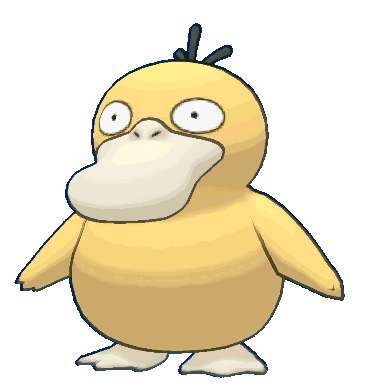

PSYDUCK #054
Psyduck (Japanese: コダック Koduck) is a Water-type Pokémon introduced in Generation I. It evolves into Golduck at level 33, known as the 'Duck Pokémon'.

Normal Psyduck
.gif)
Shiny Psyduck


Psyduck is a yellow Pokémon resembling a duck or a bipedal platypus. On top of its head are three thick strands of black hair, and it has a wide, flat cream-colored beak. Psyduck's eyes seem vacant and have tiny pupils. Its legs and tail are stubby, and it has cream- colored webbed feet. There are three claws on each of its hands. Psyduck is constantly stunned by its headache and is unable to think very clearly. It usually stands immobile, trying to calm its headache. However, when its headache becomes too severe, Psyduck releases tension in the form of strong psychic powers. The use of these powers produces brain waves identical to those seen in sleepers, and the Pokémon is unable to recall these episodes. Psyduck lives in freshwater lakes and small ponds, but can be seen in rivers in tropical areas as shown in Pokémon Snap.
Evolution Chart